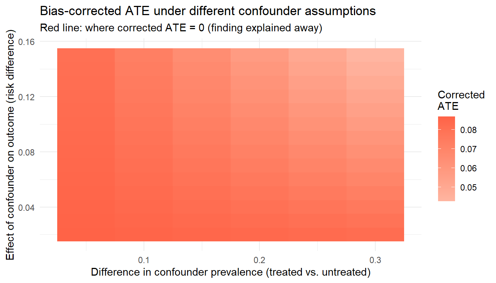
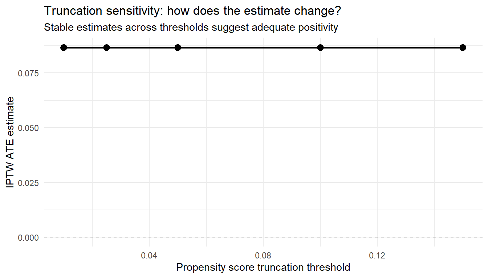

library(tidyverse)
set.seed(2026)
n <- 3000
# Measured confounders
age <- rnorm(n, 65, 10)
cvd <- rbinom(n, 1, plogis(-1.5 + 0.03 * (age - 60)))
statin <- rbinom(n, 1, 0.4)
# Unmeasured confounder (frailty) - we simulate it but pretend we cannot measure it
frailty <- rnorm(n, 0, 1)
# Treatment model (affected by both measured and unmeasured confounders)
A <- rbinom(n, 1, plogis(-0.5 + 0.02 * (age - 60) + 0.5 * cvd +
0.3 * statin + 0.4 * frailty))
# Outcome model (also affected by unmeasured confounder)
Y <- rbinom(n, 1, plogis(-2.5 + 0.3 * A + 0.04 * (age - 60) +
0.6 * cvd + 0.2 * statin + 0.5 * frailty))
dat <- tibble(age, cvd, statin, frailty, A, Y)15 Sensitivity Analysis for Real-World Evidence
16 Sensitivity Analysis for Real-World Evidence
Quantifying what you cannot measure
You have followed the Causal Roadmap, fit a TMLE with Super Learner, checked diagnostics, and obtained a credible-looking estimate with a tight confidence interval. Should you believe it?
The confidence interval captures statistical uncertainty, the uncertainty from having a finite sample. But it says nothing about causal uncertainty: what happens if your identification assumptions are wrong? What if there is an unmeasured confounder? What if propensity score truncation is too aggressive? What if the Super Learner library was too narrow?
Sensitivity analysis is the discipline of asking “how wrong could I be?” and providing quantitative answers. This chapter introduces the key sensitivity analysis tools for real-world evidence, with emphasis on approaches that are practical for applied analysts.
Learning objectives
- Distinguish statistical uncertainty (sampling variability) from causal uncertainty (assumption violations)
- Compute and interpret E-values for unmeasured confounding
- Perform simple quantitative bias analysis for a single unmeasured confounder
- Conduct truncation sensitivity analysis for propensity score bounds
- Understand the role of negative controls in assessing residual bias
- Use learner library sensitivity to assess model dependence
This chapter complements Chapter 3.5, which covers diagnostics for the estimation machinery. Here the focus is on sensitivity to the identification assumptions themselves.
17 1. Two Kinds of Uncertainty
Every causal estimate from observational data carries two distinct types of uncertainty:
| Type | Source | Addressed by |
|---|---|---|
| Statistical | Finite sample size | Confidence intervals, standard errors |
| Causal | Untestable assumptions | Sensitivity analysis |
A confidence interval that excludes zero tells you the estimate is unlikely to be due to chance, given that the identification assumptions hold. Sensitivity analysis asks: how badly would those assumptions need to be violated to change the conclusion?
The Reporting Principle
Every observational causal analysis should include at least one formal sensitivity analysis. An estimate without sensitivity analysis is like a clinical trial without a safety report: it tells only half the story.
18 2. Simulated Example
We use a simple pharmacoepidemiologic dataset throughout this chapter.
The true treatment effect operates through the coefficient 0.3 on the log-odds scale. But frailty confounds the treatment-outcome relationship, and we will pretend it is unmeasured.
# Analysis ignoring frailty (what the analyst would actually do)
ps_mod <- glm(A ~ age + cvd + statin, family = binomial, data = dat)
out_mod <- glm(Y ~ A + age + cvd + statin, family = binomial, data = dat)
# G-computation estimate (biased due to unmeasured confounding)
dat1 <- dat %>% mutate(A = 1)
dat0 <- dat %>% mutate(A = 0)
p1 <- predict(out_mod, newdata = dat1, type = "response")
p0 <- predict(out_mod, newdata = dat0, type = "response")
naive_ate <- mean(p1 - p0)
cat("Estimated ATE (ignoring frailty):", round(naive_ate, 4), "\n")
#> Estimated ATE (ignoring frailty): 0.0878Because frailty is a positive confounder (increases both treatment probability and outcome risk), the estimated treatment effect is biased upward.
19 3. E-Values: How Strong Would Unmeasured Confounding Need to Be?
The E-value asks: what is the minimum strength of association that an unmeasured confounder would need to have with both treatment and outcome to fully explain away the observed estimate?
What the E-Value Measures
The E-value is defined on the risk ratio scale. An E-value of 3.0 means that an unmeasured confounder would need to be associated with both treatment and outcome by a risk ratio of at least 3.0 each (above and beyond the measured confounders) to reduce the observed estimate to the null. The larger the E-value, the more robust the finding is to unmeasured confounding.
19.1 3.1 Computing E-values
For a risk ratio estimate \(\text{RR}\), the E-value is:
\[ E\text{-value} = \text{RR} + \sqrt{\text{RR} \times (\text{RR} - 1)} \]
For the lower confidence limit, apply the same formula to the lower bound of the confidence interval for the RR.
# Convert our risk difference to approximate risk ratio for E-value
risk1 <- mean(p1)
risk0 <- mean(p0)
rr <- risk1 / risk0
# E-value function
e_value <- function(rr) {
rr <- max(rr, 1 / rr) # ensure RR >= 1
rr + sqrt(rr * (rr - 1))
}
cat("Approximate risk ratio:", round(rr, 2), "\n")
#> Approximate risk ratio: 1.81
cat("E-value:", round(e_value(rr), 2), "\n")
#> E-value: 3.0119.2 3.2 Interpreting E-values
E-Value Interpretation Guide
| E-value | Interpretation |
|---|---|
| < 1.5 | Very weak: almost any unmeasured confounder could explain it |
| 1.5 to 2.0 | Moderate: a moderately strong confounder could explain it |
| 2.0 to 3.0 | Reasonably robust |
| > 3.0 | Strong: would require a very powerful unmeasured confounder |
Context matters. If the E-value is 2.5 but you know that unmeasured lifestyle factors (smoking, exercise) are likely to have risk ratios of 3 or more with both treatment and outcome, the finding is still vulnerable.
E-Value Limitations
E-values are a useful screening tool, but they have important limitations:
- They assume a single unmeasured confounder. Multiple weak confounders can jointly produce large bias.
- They operate on the risk ratio scale, which may not match your estimand (risk difference).
- A large E-value does not prove that unmeasured confounding is absent. It only quantifies the strength required.
- E-values cannot replace subject-matter reasoning about what confounders might be missing.
20 4. Quantitative Bias Analysis
When you have substantive knowledge about a plausible unmeasured confounder, you can model its impact directly rather than using a generic bound like the E-value.
20.1 4.1 Simple bias formula
For a single binary unmeasured confounder \(U\) with:
- Prevalence among treated: \(p_1 = P(U = 1 \mid A = 1)\)
- Prevalence among untreated: \(p_0 = P(U = 1 \mid A = 0)\)
- Effect on outcome (risk difference): \(\gamma = E[Y \mid U=1, A, W] - E[Y \mid U=0, A, W]\)
The approximate bias is:
\[ \text{Bias} \approx \gamma \times (p_1 - p_0) \]
The bias-corrected estimate is the observed estimate minus this bias.
20.2 4.2 Worked example
Suppose we believe frailty (binary: frail vs. not frail) is an unmeasured confounder. Based on clinical literature, we hypothesize:
- Frail patients are 15 percentage points more likely to receive treatment (\(p_1 - p_0 = 0.15\))
- Frailty increases risk of the outcome by 8 percentage points (\(\gamma = 0.08\))
# Bias analysis
gamma <- 0.08 # effect of frailty on outcome
delta_p <- 0.15 # difference in frailty prevalence by treatment
bias <- gamma * delta_p
corrected_ate <- naive_ate - bias
tibble(
Quantity = c("Observed ATE", "Estimated bias", "Bias-corrected ATE"),
Value = round(c(naive_ate, bias, corrected_ate), 4)
)
#> # A tibble: 3 × 2
#> Quantity Value
#> <chr> <dbl>
#> 1 Observed ATE 0.0878
#> 2 Estimated bias 0.012
#> 3 Bias-corrected ATE 0.075820.3 4.3 Sensitivity over a range of assumptions
Since we do not know the exact confounder parameters, we can vary them over a plausible range.
# Grid of bias parameters
bias_grid <- expand_grid(
gamma = seq(0.02, 0.15, by = 0.01),
delta_p = seq(0.05, 0.30, by = 0.05)
) %>%
mutate(
bias = gamma * delta_p,
corrected = naive_ate - bias,
would_flip = corrected < 0
)
# Contour plot
ggplot(bias_grid, aes(x = delta_p, y = gamma, fill = corrected)) +
geom_tile() +
geom_contour(aes(z = corrected), breaks = 0, color = "red", linewidth = 1) +
scale_fill_gradient2(low = "steelblue", mid = "white", high = "tomato",
midpoint = 0, name = "Corrected\nATE") +
labs(
x = "Difference in confounder prevalence (treated vs. untreated)",
y = "Effect of confounder on outcome (risk difference)",
title = "Bias-corrected ATE under different confounder assumptions",
subtitle = "Red line: where corrected ATE = 0 (finding explained away)"
) +
theme_minimal()
Reading the Contour Plot
The red contour line shows combinations of confounder strength that would reduce the corrected ATE to zero. If most plausible combinations fall below and to the left of this line, the finding is reasonably robust. If the red line cuts through the center of the plausible region, the finding is fragile.
21 5. Truncation Sensitivity Analysis
When propensity scores are bounded away from 0 and 1 (truncated), the choice of truncation threshold affects the estimate. A sensitivity analysis varies the threshold to check stability.
# Fit propensity score
ps <- predict(ps_mod, type = "response")
# IPTW at different truncation levels
truncation_levels <- c(0.01, 0.025, 0.05, 0.10, 0.15)
iptw_results <- map_dfr(truncation_levels, function(delta) {
ps_trunc <- pmin(pmax(ps, delta), 1 - delta)
w <- ifelse(dat$A == 1, 1 / ps_trunc, 1 / (1 - ps_trunc))
risk1 <- sum(w * dat$Y * (dat$A == 1)) / sum(w * (dat$A == 1))
risk0 <- sum(w * dat$Y * (dat$A == 0)) / sum(w * (dat$A == 0))
tibble(
truncation = delta,
ate = risk1 - risk0,
max_weight = max(w),
ess = sum(w)^2 / sum(w^2)
)
})
iptw_results
#> # A tibble: 5 × 4
#> truncation ate max_weight ess
#> <dbl> <dbl> <dbl> <dbl>
#> 1 0.01 0.0866 3.81 2897.
#> 2 0.025 0.0866 3.81 2897.
#> 3 0.05 0.0866 3.81 2897.
#> 4 0.1 0.0866 3.81 2897.
#> 5 0.15 0.0866 3.81 2897.ggplot(iptw_results, aes(x = truncation, y = ate)) +
geom_line(linewidth = 1) +
geom_point(size = 3) +
geom_hline(yintercept = 0, linetype = "dashed", color = "gray60") +
labs(
x = "Propensity score truncation threshold",
y = "IPTW ATE estimate",
title = "Truncation sensitivity: how does the estimate change?",
subtitle = "Stable estimates across thresholds suggest adequate positivity"
) +
theme_minimal()
Interpreting Truncation Sensitivity
If the estimate is stable across truncation thresholds (flat line), positivity is adequate and the result does not depend on extreme weights. If the estimate changes dramatically with truncation, the result is driven by a few observations with extreme propensity scores, and the causal interpretation is fragile.
22 6. Negative Controls
A negative control outcome is an outcome that should not be affected by the treatment. If your analysis finds a “treatment effect” on a negative control, something is wrong (likely residual confounding).
A negative control exposure is an exposure that should not affect the outcome. Finding an association between a negative control exposure and the real outcome also signals residual bias.
Negative Control Logic
If your method is working correctly and confounding is adequately controlled:
- Negative control outcome: The estimated treatment effect should be approximately zero
- Negative control exposure: The estimated association with the real outcome should be approximately zero
Any non-null finding on a negative control is evidence of residual bias.
22.0.1 Example
In a study of NSAIDs and acute kidney injury, a plausible negative control outcome might be accidental fracture, since there is no biological mechanism by which NSAIDs should affect fracture risk in the short term (90 days). If your TMLE estimate shows NSAIDs “increase” fracture risk, the confounding structure is likely inadequately controlled.
# Simulate a negative control outcome (unrelated to treatment)
dat <- dat %>%
mutate(
neg_control = rbinom(n, 1, plogis(-3 + 0.03 * (age - 60) +
0.3 * cvd + 0.4 * frailty))
# Note: no A term - treatment truly has no effect on this outcome
)
# Estimate "effect" on negative control using same analysis
nc_mod <- glm(neg_control ~ A + age + cvd + statin, family = binomial, data = dat)
nc_p1 <- predict(nc_mod, newdata = dat1, type = "response")
nc_p0 <- predict(nc_mod, newdata = dat0, type = "response")
nc_effect <- mean(nc_p1 - nc_p0)
cat("Estimated effect on negative control:", round(nc_effect, 4), "\n")
#> Estimated effect on negative control: 3e-04
cat("(Should be ~0 if confounding is controlled)\n")
#> (Should be ~0 if confounding is controlled)If the negative control effect is substantially different from zero, it provides empirical evidence that unmeasured confounding (in this case, frailty) is biasing results.
23 7. Learner Library Sensitivity
For analyses using Super Learner, the choice of learner library is an analyst decision. Check whether results are sensitive to this choice.
library(SuperLearner)
# Library 1: Minimal (parametric only)
lib1 <- c("SL.glm", "SL.mean")
# Library 2: Standard
lib2 <- c("SL.glm", "SL.glmnet", "SL.earth", "SL.ranger", "SL.mean")
# Library 3: Aggressive (many flexible learners)
lib3 <- c("SL.glm", "SL.glmnet", "SL.earth", "SL.ranger",
"SL.glm.interaction", "SL.mean")
# Run TMLE with each library and compare
library(tmle)
results <- list()
for (lib_name in c("Minimal", "Standard", "Aggressive")) {
lib <- switch(lib_name,
Minimal = lib1, Standard = lib2, Aggressive = lib3)
fit <- tmle(Y = dat$Y, A = dat$A,
W = dat %>% select(age, cvd, statin),
family = "binomial",
Q.SL.library = lib, g.SL.library = lib)
results[[lib_name]] <- tibble(
Library = lib_name,
ATE = fit$estimates$ATE$psi,
SE = sqrt(fit$estimates$ATE$var.psi),
CI_lower = fit$estimates$ATE$CI[1],
CI_upper = fit$estimates$ATE$CI[2]
)
}
bind_rows(results)If the three estimates are similar, the result is not sensitive to the library choice. If they diverge substantially, the nuisance function estimation is unstable and you should investigate further.
24 8. Summary
Key Takeaways
- Every observational causal estimate carries both statistical and causal uncertainty. Sensitivity analysis addresses the latter.
- E-values provide a quick, assumption-free bound on how strong unmeasured confounding would need to be.
- Quantitative bias analysis uses subject-matter knowledge to model the impact of a specific unmeasured confounder.
- Truncation sensitivity checks whether the estimate depends on extreme propensity scores.
- Negative controls provide empirical evidence about residual bias.
- Library sensitivity checks whether Super Learner results depend on analyst choices.
- No single sensitivity analysis is sufficient. Use multiple approaches to build a comprehensive picture of robustness.
24.1 Check your understanding
Q1. Your TMLE estimate has an E-value of 1.3. A reviewer asks whether this is robust to unmeasured confounding. What do you say?
An E-value of 1.3 means that an unmeasured confounder associated with both treatment and outcome by a risk ratio of only 1.3 could fully explain the finding. This is a weak level of robustness: many common confounders (smoking, socioeconomic status, comorbidity burden) have risk ratios substantially larger than 1.3 with both treatment and outcome. You should honestly report that the finding is vulnerable to even moderate unmeasured confounding, and consider whether any plausible unmeasured confounder could have associations this strong.
Q2. You run a negative control analysis and find that your method estimates a risk difference of 0.04 (95% CI: 0.01, 0.07) for a negative control outcome. What does this tell you?
A statistically significant “effect” on a negative control outcome is evidence of residual bias. Since the treatment should not affect this outcome, the non-null estimate suggests that unmeasured confounding (or some other bias) is present in your analysis. The magnitude (0.04) gives a rough sense of how large the bias might be for your primary outcome as well, though the bias may differ depending on the relationship between the unmeasured confounder and each outcome. This finding should temper your confidence in the primary result and be prominently reported.
Q3. Your truncation sensitivity analysis shows that the IPTW estimate is 0.08 at a threshold of 0.01 but jumps to 0.15 at a threshold of 0.10. What does this suggest?
This pattern suggests that the estimate at the less aggressive threshold (0.01) is being pulled toward zero by a few observations with extreme weights. When those extreme weights are truncated (threshold 0.10), the estimate increases. This indicates positivity problems: some individuals have propensity scores near 0 or 1, meaning the data provide limited support for the causal contrast in certain covariate strata. The sensitivity of the estimate to truncation is itself informative. You should examine which patients have extreme scores, consider whether the target population should be restricted to the overlap region, and report both estimates with an explanation of the trade-off between bias (from truncation) and variance (from extreme weights).
24.2 What comes next
This chapter completes the core toolkit for a single real-world evidence analysis: design (target trial emulation), estimation (g-computation, IPTW, TMLE with Super Learner), diagnostics, and sensitivity analysis. The remaining chapters extend this toolkit to longitudinal settings with time-varying treatments and confounders, and to specialized applications including hybrid trial-RWD designs, mediation, and time-to-event estimands.
sessionInfo()
#> R version 4.4.2 (2024-10-31 ucrt)
#> Platform: x86_64-w64-mingw32/x64
#> Running under: Windows 11 x64 (build 26200)
#>
#> Matrix products: default
#>
#>
#> locale:
#> [1] LC_COLLATE=English_United States.utf8
#> [2] LC_CTYPE=English_United States.utf8
#> [3] LC_MONETARY=English_United States.utf8
#> [4] LC_NUMERIC=C
#> [5] LC_TIME=English_United States.utf8
#>
#> time zone: America/Los_Angeles
#> tzcode source: internal
#>
#> attached base packages:
#> [1] stats graphics grDevices utils datasets methods base
#>
#> other attached packages:
#> [1] lubridate_1.9.3 forcats_1.0.0 stringr_1.6.0 dplyr_1.1.4
#> [5] purrr_1.0.2 readr_2.1.5 tidyr_1.3.1 tibble_3.2.1
#> [9] ggplot2_4.0.2 tidyverse_2.0.0
#>
#> loaded via a namespace (and not attached):
#> [1] gtable_0.3.6 jsonlite_2.0.0 compiler_4.4.2 tidyselect_1.2.1
#> [5] scales_1.4.0 yaml_2.3.10 fastmap_1.2.0 R6_2.6.1
#> [9] labeling_0.4.3 generics_0.1.3 isoband_0.3.0 knitr_1.49
#> [13] htmlwidgets_1.6.4 tzdb_0.4.0 pillar_1.9.0 RColorBrewer_1.1-3
#> [17] rlang_1.1.7 utf8_1.2.4 stringi_1.8.7 xfun_0.49
#> [21] S7_0.2.1 timechange_0.3.0 cli_3.6.5 withr_3.0.2
#> [25] magrittr_2.0.3 digest_0.6.37 grid_4.4.2 rstudioapi_0.17.1
#> [29] hms_1.1.3 lifecycle_1.0.5 vctrs_0.7.1 evaluate_1.0.5
#> [33] glue_1.8.0 farver_2.1.2 fansi_1.0.6 rmarkdown_2.29
#> [37] tools_4.4.2 pkgconfig_2.0.3 htmltools_0.5.8.1